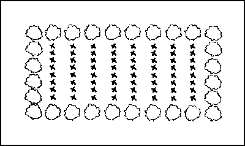
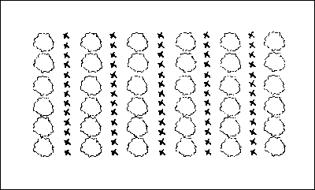
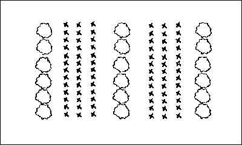
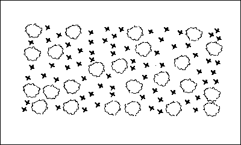
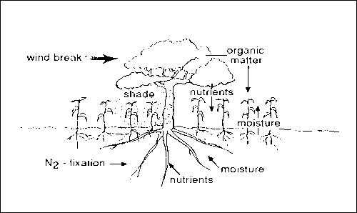
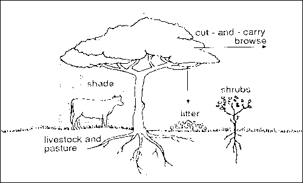

Agroforestry
Agroforestry
.gif)
{kind=link}
f8c2.gif?width=500&height=500&iframe=true){kind=link}
Introduction
Agroforestry is an old practice, consisting of growing perennial trees and shrubs in association with agricultural crops, pastures and/or keeping livestock in the same field. Agroforestry aims to use agro-biodiversity in generating multiple services. Trees and shrubs provide mulching material, green manure, animal fodder, soil erosion control, shade, nutrient cycling and improved soil fertility and also socioeconomic benefits e.g. saleable products such as fruits, fuel wood and charcoal, timber for construction, craft materials, etc.
The classification of the different types of agroforestry is based on the type of environment and on the combination of the components. In the humid lowland tropics, the broadest range of homegardens and multi-level cropping are found, whereas agro-silvopastoral systems dominate in semi-arid and subhumid zones. In tropical highlands vegetation strips are common, in order to reduce erosion risk.
Basically, there are three categories of agroforestry systems:
- Agrosilvicultural systems: Trees with crops e.g. taungya and alley cropping
- Silvopastoral systems: Trees with livestock/pasture e.g. trees and shrubs on pastures and multipurpose trees, fodder trees and shrubs grown on or around cropland
- Agrosilvopastoral systems: Trees with both crops and livestock e.g. compound farming.
Next to climatic conditions and soil type, success of agroforestry depends on the right choice of species combination, management practices and the understanding and motivation for using it. An agroforestry system involves two or more plant species and/or animals (including at least one woody perennial), it has more than two outputs and has a cycle of more than one year.
Distribution of the plant components can vary in space and time. Plant components can be mixed in different densities (see images below) and have a separate long/short cropping/fallow cycle.
|  |
| Trees along borders of fields. |
| (c) B.T. Kang, IITA (1996) |
|  |
| Alternative rows of plant components. |
| (c) B.T. Kang, IITA (1996) |
|  |
| Alternative strips or alley cropping. |
| (c) B.T. Kang, IITA (1996) |
|  |
| Random mixture of plant components. |
| (c) B.T. Kang, IITA (1996) |
Ecological Aspects of Agroforestry
Agroforestry systems have the following basic principles:
- Competition between the plants must be minimised
This can be achieved by planting the plants in such a way that they are not using resources all at the same time. For instance, acacia trees (Faidherbia albida) loose their leaves during the millet growing season, and are suitable to feed cattle, as their pods are rich of proteins. Therefore, many African farmers grow acacia trees combining with millet and cattle. - Complementarity among the plants must be maximised
Complementarity and competition depend on the root system of the crops and trees/shrubs, i.e. on the depth or shallowness of the roots. If one has deep, the other one shallow roots, they will not compete for nutrients and water, but might complement/ benefit from each other.
(Sanchez 1995)
Agroforestry has following advantages:
- Improvement of soil fertility. Trees provide mulch when their leaves, fruits and branches fall down and decompose. This results in an increase of organic matter and recycling of nutrients from deep in the soil, and leguminous trees fix nitrogen that can benefit food crops.
- Effects on soil moisture and microclimate. Shading and windbreak effects of trees influence microclimate and help to conserve soil moisture. Shade helps reducing the soil temperature and the amount of water that evaporates into the air. Though their roots may also deprive crops of moisture.
- Soil conservation. Trees can conserve the soil in many ways. They cushion the impact of raindrops on the soil and reduce the amount of rain-splash erosion. Their roots bind/stabilise the soil. Planted along contours, they can interrupt the flow of water running off the surface. They can act as windbreaks protecting the soil against wind erosion
- Improvement of biodiversity. Agroforestry systems improve diversity and quantity of animals/wildlife by offering a greater variety of habitats
Drawbacks to agroforestry:
One is labour is required. However, it can be reduced by proper planning. Rows of trees can be planted, weeded and guarded at the same time as the food crops. Surface mulching with leaves involves less labour than digging them in. Any digging needed can be done at the same time as the land is prepared for the crops.
Trees need to be watered and protected when young. Later on they can survive on rain water alone.
Trees can also lower yields of maize and other food crops. However, if both crop and tree products are taken into account, a higher total yield from unit of land will be achieved than in a monoculture. Though a field of maize may produce a high yield, it is not sustainable in a long run as problems associated with pests and diseases and soil exhaustion will soon lead to decline in yields and higher production costs.
|  |
| Interactions in agrosylvicultural systems. |
| (c) B.T. Kang, IITA (1996) after Young (1998) |
|  |
| Silvopastoral system. |
| (c) B.T. Kang, IITA (1996) |
Selection of Trees and Shrubs Species
The multipurpose trees
Following species were found to perform well, in terms of survival, growth, and wood and foliage production, across diverse agro-ecological zones:
- Moringa oleifera
- Senna siamea
- Senna spectabilis
- Acacia auriculiformis
- Leucaena leucocephala (except in acidic soils)
- Some provenances of Gliricidia sepium
Fodder trees
Fodder refers to the green parts of the tree, for example leaves or sometimes flowers and pods, eaten by browsing or grazing animals. Fodder trees include species of Acacia, Leucaena, Prosopis and many others.
One of the best fodder trees is Calliandra, having high protein content. Calliandra grows up to 4 to 6 metres, requires rainfall above 1000 mm per year and grows well in well-drained soils. Nine months after planting, fodder can be harvested. Harvesting can be done 4 to 6 times per year.
Criteria for selection of fodder species:
- Edible to livestock and rich in protein
- Easy to manage
- Drought tolerant
- Tolerant of trampling if to be grazed
- Able to resprout easily
Taungya system (shamba system)
The Taungya system combines forestry crops and agricultural crops during the first years of establishment of the forestry plantation. The main objective of taungya is wood production.
Generally, the land belongs to the forestry departments, who allow subsistence farmers to grow their crops for two or three years. Farmers have to take care of the forestry seedlings, getting in return part or all of the agricultural produce.
The Taungya system comes originally from Myanmar (Burma) and means hill (Taung) cultivation (ya). In East Africa it is known as Shamba system.
Dispersed trees on cropland
The practice of growing trees in fields while crops are grown alongside or underneath can be done either by protecting and managing the trees that are already there or by planting new trees.
There are different spacing patterns and densities of placement depending on the type of tree chosen and of crop grown, but trees are generally planted at least 8-10 m apart.
Advantages:
- Growing trees with crops can increase crop yields due to shading and the addition of nutrients and organic matter to the soil.
- Trees can be a breeding place for beneficial insects and other creatures that can reduce crop pest numbers.
- Trees can provide products of commercial and subsistence value.
Disadvantages:
- Trees can attract birds and crop pests, which can damage crops.
- Competition with crops for water, nutrients. It is important to plant trees with deeper roots than those of the crops grown alongside.
Compound farming (Home gardens)
Compound farming is also known as home garden, village-forage garden, kitchen garden and household garden. In Africa, they are known as:
- Compound farms in Southeast Nigeria, humid lowlands
- Chagga home gardens in Mt. Kilimanjaro, Northern Tanzania, highlands
- Ka/Fuyo gardens in Hounde region in Burkina Faso, semi-arid to sub-humid lowlands
Compound farming consists on growing trees, shrubs, vines and herbaceous plants in or around the homesteads, aiming mostly food production for household consumption. In home gardens perennial crops and annual crops are grown side by side. Home gardens are characterised by the intensive use of multi-purpose trees, shrubs, food crops and animals. Typical is also the high species diversity and the complex, layered structure (3-4 vertical canopy layers). Near the ground there is a herbaceous layer consisting of plants such as beans, pulses, root crops grasses and medicinal plants, which grow to about 1.5 metres. The middle layer (1-3 m height) consists of small trees that tolerate some amount of shade such as coffee, tea, banana, papaya or food plants such as cassava, etc. The upper layers are usually about 20 metres high and consist of trees for fruit, fuel, timber, shade and fodder.
Animals are also usually included in the system.
The Chagga home gardens in Tanzania are based on Arabica coffee and banana for commercial purposes.
Advantages:
- Production of food is continuous and diverse.
- Farmers have easy access to food, timber, fuel, fodder, spices and medicines.
- Home gardens protect the soil and conserve water.
- Labour can be used efficiently because home gardens are situated close to houses.
- Produce may be sold locally and act as a financial buffer in times of need.
Disadvantages:
- The high diversity of plants in a home garden can provide a habitat for species that could become pests or introduce diseases.
Alley cropping
Alley cropping is also known as alley farming or hedgerow intercropping. It consists in growing food crops between hedgerows of shrubs and trees, specially leguminous species. The arrangement of the components is uniform (not mixed), consisting of strips with different widths.
During growing of the crops, the hedges get pruned regularly, to avoid shading of the crops and to provide biomass, enhancing the nutrient status and physical properties of the soil.
Alley cropping is developed to improve or maintain crop yields by improving soil fertility and micro-climate through the cycling of nutrients, mulching and weed control. This can be reached by using specific tree species that produce foliage and fix nitrogen, enriching the soil. By planting deep-rooted trees and shrubs that grow quickly in hedgerows, essential plant nutrients are recycled to the benefit of crops planted in alleys between the hedgerows. Furthermore, a good mixture of trees and shrubs can provide animal fodder, protection against soil erosion, shade and windbreaks, fuel wood and construction material.
Alley cropping is mostly used in humid or subhumid tropical areas on fragile soils and seems to work best where farmers need to intensify crop production but have soil fertility problems.
The technique of alley cropping requires careful planning and management. It is preferable that the species used have a light open crown that lets sunlight pass through onto the crops that are being grown. It is also possible to prune species with a denser crown. The trees used must also be capable of rapid resprouting after coppicing.
Alley cropping management cycle
1. The trees are planted in lines and crop grown between the rows.
2. When the shade from the trees begins to interfere with the crops they are coppiced or pollarded.
3. The coppiced branches are placed between the rows. Leaves will fall to the ground adding organic matter to the soil when they breakdown. Branches and twigs can be gathered for fuel or other purposes.
4. Trees resprout.
5. The cycle is repeated.
Advantages of alley cropping:
- Improvement of soil fertility and structure and micro-climate conditions, thereby benefiting crops.
- A longer cropping period and higher land use intensity.
- Trees used can provide products of commercial and subsistence value.
Disadvantages of alley cropping:
- The technique will take some years to establish, so farmers will have to wait for the benefits.
- Farmers may not have the capital available for the investment in trees.
- Alley cropping requires considerable labour and management - results will be poor if planting and pruning schedules are not carried out properly.
- Competition with crops for water and nutrients. It is important to plant trees with deeper roots than those of the crops grown alongside.
Improved Fallows
Fallows are defined as following:
1) Allowing crop land to lie idle, either tilled or untilled, during the whole or greater portion of a growing season. Tillage is usually practised to control weeds and encourage the storage of moisture in the soil.
2) Land rested from deliberate cropping, not necessarily without cultivation or grazing but without sowing.
3) State of land left without a crop or weed growth for extended period, often to accumulate moisture.
Improved fallow is the replacement or enhancement of natural fallow vegetation by the introduction of selected trees or shrubs. The purpose of improved fallow is to shorten the fallow period and/or increase the yield of subsequent crops. This is done by planting trees or shrubs which can help to restore nutrients to the soil and to suppress weeds as well as providing useful by-products. The trees therefore enrich the fallow both biologically and economically.
In this practice the cropping period usually alternates with the tree-growing period. However, it is possible to keep some trees during the cropping period and many farmers have combined the method of improved fallow with alley cropping.
By planting soil enriching species, the minimum fallow period can be shortened from 15 to 20 years to about 8 to 10 years. However in Kenya, Sesbania is grown in a 3 year rotation and Tephrosia in a 1 year rotation.
Advantages:
- The time required for soil enrichment can be shortened; the tree canopy and fast growing species can suppress weeds.
- Soil erosion is minimised.
- The use of a wide variety of species can reduce pests, weeds and diseases.
- This method is relatively inexpensive to establish and maintain.
- The wood can be used or sold at the end of the fallow period.
Disadvantages:
- The planting of seedlings and tree cutting must be done during the same period of crop planting - labour may be a limiting factor at this time.
- The fallow will need protection from browsing animals.
Contour vegetation strips
Contour vegetation strips are living barriers of trees and shrubs which are planted along the contour lines of a slope, in order to control water and soil erosion. These lines of vegetation can also provide useful products such as food, fuel, building poles, fodder or gum.
There are many factors to consider when building contour strips as bad design can lead to even more severe erosion. The effectiveness of the vegetation strips depends on the type of trees planted, the spacing of the trees and the width of the strip, the steepness of the slope, the amount of rainfall and the soil type.
Advantages:
- Strips can provide additional nutrients and organic matter into the soil. This can be increased by using nitrogen-fixing plants.
- Excess vegetation can provide food for animals. These can be allowed to browse through the strip to feed on crop remains after harvesting.
Disadvantages:
- Contour strips take up land which could be used for crops.
Planting on terraces
Terraces are normally used as soil and water conservation measures on slopes. They provide flat areas of land that can be planted with crops.
Building terraces involves digging ditches and making ridges. Along the contours of a slope, grasses, trees and shrubs can be planted on the ridges, helping to stabilise the ground, providing leaf mulch, protecting crops from wind and providing other useful products such as food, fuel, building poles or fodder.
Trees can be planted on the ridge of the terrace or at the back of the terrace. If the tree is planted at back of the terrace it will get all of its water requirements. If a tree is planted on the ridge of the terrace, it will be on drier ground but the leaves will spread around more evenly and provide more nutrients for crops. Trees can be planted in both locations if the terrace is wide enough.
The type of tree or hedge used will depend on the site it is planted on and on the kind of products or services you wish it to provide. If the aim of the terrace is to stabilise the soil, trees and shrubs with strong roots systems should be planted. These will be able to withstand the movements of soil and water.
Advantages:
- Stabilisation of the slope, which results in soil and water conservation and a better environment for crops to grow in.
- Shelter from wind.
- Pest control by providing a breeding place for beneficial insects.
- Increased area of land that can be cropped.
- Useful by-products such as food, fuel, building poles or fodder.
Disadvantages:
- As the structure of the land is changed quite dramatically, land tenure rights may first need to be established or secured.
- Building terraces require adequate skills and material, labour and capital and also the capacity to maintain the structures for years to come.
Information Source Links
- Franzel, S. and Scherr, S.J. (eds) (2002). Trees on the farm. Assessing the Adoption Potential of Agroforestry Practices in Africa. ICRAF/CABI Publishing. ISBN 0 85199 561 6.
- Garrity, D., Okono, A., Grayson, M. and Parrott, S. (eds.) (2006). World Agroforestry into the Future. Nairobi: World Agroforestry Centre.
- HDRA (2001). Agroforestry in the tropics. HDRA - the organic organisation, UK. www.gardenorganic.org.uk
- Huxley, P. and van Houten, H. (1997). Glossary for agroforestry. ICRAF Nairobi, Kenya. ISBN 929059 124 2
- International Institute of Rural Reconstruction (IIRR). Sustainable Agriculture Extension Manual. Available at www.betuco.be/
- Kang, B.T. (1996). Sustainable agroforestry systems for the tropics: concepts and examples. IITA Research Guide 26. www.iita.org
- Robert, B., Caine, C, Cooper, D., Cousins, B., and Roberts, S. (1998). People's Farming Workbook. Environmental and Development Agency. David Philip Publishers, South Africa. ISBN: 0 86486 431 0
- Rocheleau, D., Weber, F. and Field-Juma, A. (1988). Agroforestry in dryland Africa. ICRAF, Nairobi, Kenya. ISBN 92 9059 049 1
- Sanchez, P.A. (1995). Science in agroforestry. In: Agroforestry systems, Vol.30, Numbers 1-2, 5-55.
- Schroth, G. and Sinclair, F.L. (Eds) (2003). Trees, Crops and Soil Fertility: Concepts and Research Methods. CAB International.
- Young, A. (1990). Agroforestry for soil conservation. Nairobi: ICRAF. CAB International.
| Unless otherwise stated, all content on the Infonet Biovision Website is licensed under a Creative Commons License | Disclaimer |